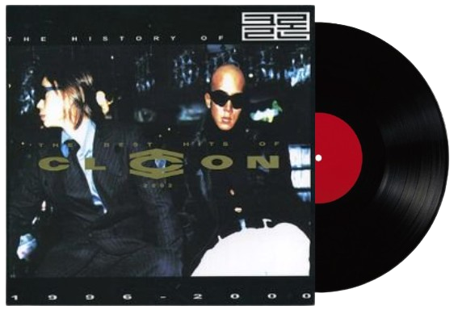

꿍따리 샤바라 빠빠빠빠
누구나 세상을 살다 보면은
마음먹은 대로 되지 않을
때가 있어
그럴땐 나처럼 노래를 불러봐
꿍따리 샤바라 빠빠빠빠
기쁨과 슬픔이 엇갈리고
좌절과 용기가 교차되고
만남과 이별을 나누면서
그렇게 우리는 살아가고
뜻대로 되지 않을 때도 있고
마음먹은 대로 될 때도 있어
다 그런 거야 누구나v
세상은 그렇게 돌아가니까
다 그렇게 사는거야
희비가 엇갈리는 세상속에서
내일이 다시 찾아오기에
우리는 희망을 안고 사는 거야
마음대로 일이 되지 않을 때
하던 일을 멈추고 여행을 떠나봐
바다를 찾아가 소릴 질러봐
꿍따리 샤바라 빠빠빠빠
꿍따리 샤바라 빠빠빠
빠빠빠빠빠 빠빠빠
꿍따리 샤바라 빠빠빠
빠빠빠빠빠 빠빠빠
우울한 날이 계속 이어질 땐
신나는 음악에 신나게 춤을 춰봐
나처럼 이렇게 리듬에 맞춰
꿍따리 샤바라 빠빠빠빠
누구나 괴로운 일은 있는 것
한가지 생각에 너무 집착하지마
그럴땐 나처럼 툭툭 털면서
꿍따리 샤바라 빠빠빠빠
기쁨과 슬픔이 엇갈리고
좌절과 용기가 교차되고
만남과 이별을 나누면서
그렇게 우리는 살아가고
뜻대로 되지 않을 때도 있고
마음먹은 대로 될 때도 있어
다 그런거야 누구나
세상은 그렇게 돌아가니까
다 그렇게 사는 거야
내일이 다시 찾아오기에
희비가 엇갈리는 세상속에서
우리는 희망을 안고 사는 거야
마음대로 일이 되지않을 땐
하던 일을 멈추고 여행을 떠나봐
바다를 찾아가 소릴 질러봐
꿍따리 샤바라 빠빠빠빠
꿍따리 샤바라 빠빠빠
빠빠빠빠빠 빠빠빠
꿍따리 샤바라 빠빠빠
빠빠빠빠빠 빠빠빠
꿍따리 샤바라 - CLON
×